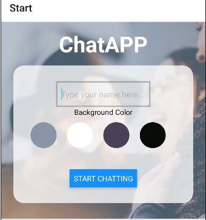
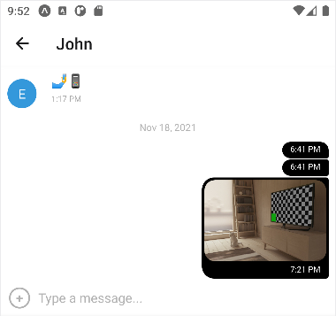

ChatApp is a Mobile App, developed using React Native & Expo, as well as Firebase for serverless storage. This application provides the user with the ability to chat with friends, send pictures, videos & their GPS Location.
ChatApp is a personal project built as part of my CareerFoundry curriculum. The app was built as an introduction to mobile app development
The aim of the project was to learn how to use React to create my very first mobile application. The problem I wanted to solve is to build a fully functional Chat App from scratch with React-Native, as well as using Firebase as my serverless database.
In my project planning phase, my project had 4 key features that needed to be met to consider the project complete.
1. A page where users can enter their name and choose a background color for the chat screen before joining the chat.
2. A page displaying the conversation, as well as an input field and submit button.
3. The chat must provide users with two additional communication features: sending images and location data.
4. Data gets stored online and offline.
Starting with the first step, I needed to create a start screen (Landing page) for my application that would allow the user to enter their name and choose a background color before joining the chat room. My application would have two screens, a start screen and a chat screen.
Keeping this in mind I set up Expo & my development environment. Expo was perfect for my project as it provides tools that could help me start and speed up my development workflow, since it has its own SDK (software development kit- a set of development tools to create applications), which offer various features, like accessing the camera, retrieving geolocation and so on.
Since most of the first step is setting out a layout and styling it, I focused on this first. To create a nice, and organized layout I used Flexbox. Flexbox is designed to provide a consistent layout on different screen sizes, as well as helping us align objects in rows or columns.
My final layout after playing around with sizes was the one above. It covers all of the requirements of step one by having a slot to input your name & the ability to pick a background color. Since this is our Start screen, the “Start Chatting” button would take us to the Chat Screen.
The second step would be creating the Chat Screen that would display the conversation, as well as adding the Chat UI. For this purpose I used Gifted Chat (A requirement for this project), a library that provides useful features like Message bubbles, message input field, a send button and options for displaying user names and avatars.
Since the library does most of the work for us, I went straight into testing for bugs. To further test the Chat Screen, as well as the transition from Start Screen to Chat Screen in a more comfortable way, I used Android Studio Emulator. This allows us to emulate a phone on our computer, which speeds up the development process, as the app is updated in real time as we code.
For the third step, the requirements were for the application to have a way to send images, as well as your current geolocation. For these two features, we require permission from the user. To do this I once again used the expo-permissions package, as well as two additional packages from Expo, one that allows the user to use their camera and/or gallery pictures, and the other to enable the Geolocation feature.
The final addition to our third step was a ‘+’ button in our text input field. Clicking on this would display a menu with the new options we just implemented.
This would prop up a menu that looks exactly like the picture below.
Unfortunately during testing, if the user closed the application, all of the messages and information would disappear. This is where step 4 comes in, getting our data stored online and offline.
To solve our online data storage we used Cloud Firebase, which allows us to set up a real-time database. Without this our application doesn’t work, as it’s impossible to have a back and forth conversation if the messages aren’t stored. After setting up Firebase, I set up a “messages” array that would contain all of the messages and images, as well as fetching these messages from the Firestore Cloud database so that they would display to the user.
To test this feature I used the Android Studio Emulator as well as my personal phone to send messages to each other, and it works!
For the second part of step 4, storing our data offline we will be using AsyncStorage. AsyncStorage allows us to store messages that were sent, read the messages and delete them by using our phones local storage. In order for our device to know if we’re online or offline we need to add NetInfo to our project. If the user is online, their data is loaded from the local storage and then synced up with the data stored in the server, if the user is offline then it will fetch and display data from AsyncStorage. With these last two libraries, our application covers all of the requirements, meaning our project is finally complete!
This was my favorite project to work on. I enjoyed adapting my knowledge of React to build a mobile app. I quickly became familiar with the serverless technology which sped up the project significantly (As I didn’t have to build a database from scratch).
The development of this app took me almost 4 weeks. My main issues were not the development itself, but Android Studio (The application that I used to test my mobile app) glitching heavily. Luckily there was a way to run the app on my phone.